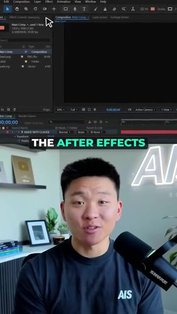
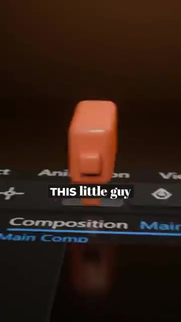
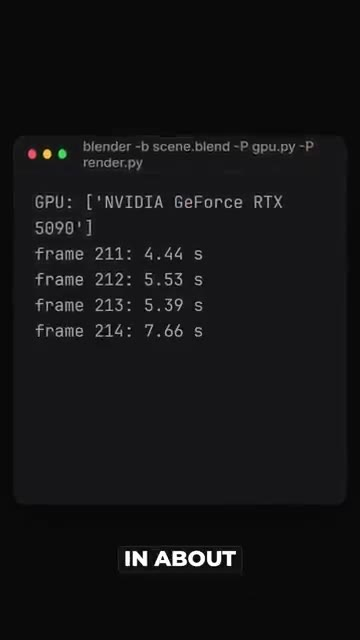
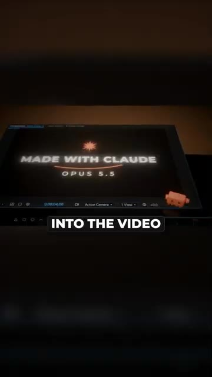
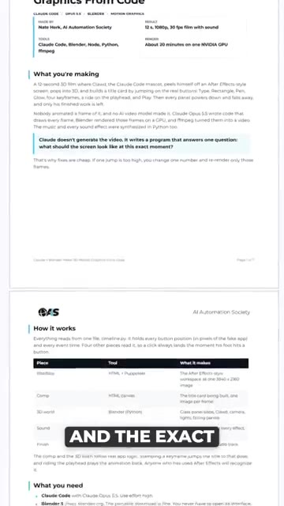

What if I told you that I made this 3D animation without ever opening Blender? And no, this isn't from an AI video model like VO or C-Dance. Claude Opus 5.5 wrote the whole thing as code. It built the After Effects interface as a webpage. It wrote a Python script that builds a 3D scene in Blender. It animated this little guy hopping across the buttons. And it even made the music and every single sound effect from scratch.
Interface & Outils : Adobe After Effects
Contenu textuel & Code : Panneaux de composition ("Main Comp"), fichiers sources ("flawd.png", "park.svg") et timeline d'After Effects.
Action / Démonstration : Démonstration du résultat final d'une animation 3D intégrée au sein d'une interface logicielle de composition.

🔍 Agrandir
🔍 AgrandirThen, Blender rendered all 360 frames on my GPU in about 15 minutes. And FFmpeg stitched them into the video that you're watching right now. So if you want the full guide with the setup and the exact prompt to just paste into Claude, Comment Blender and I'll send it over.
Interface & Outils : Terminal (ligne de commande), Blender (logiciel de rendu 3D), Document PDF/Page web de documentation technique.
Contenu textuel & Code : Commandes Blender (blender -b scene.blend...), suivi de rendu de frames (211-214), texte explicatif sur la production automatisée du film "Made with Claude".
Action / Démonstration : Exécution d'un rendu automatisé via ligne de commande et présentation visuelle du résultat du workflow de génération de film.

🔍 Agrandir
🔍 Agrandir
🔍 Agrandir